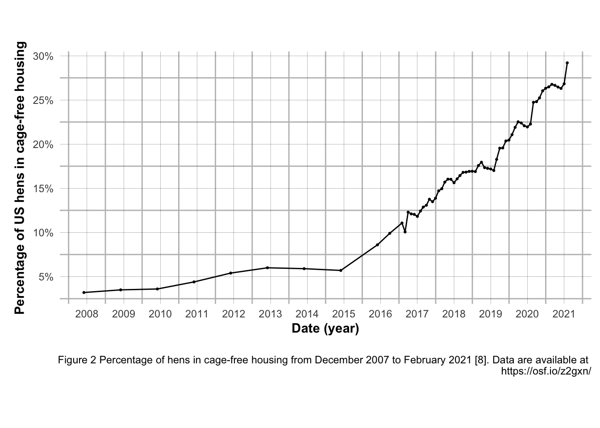
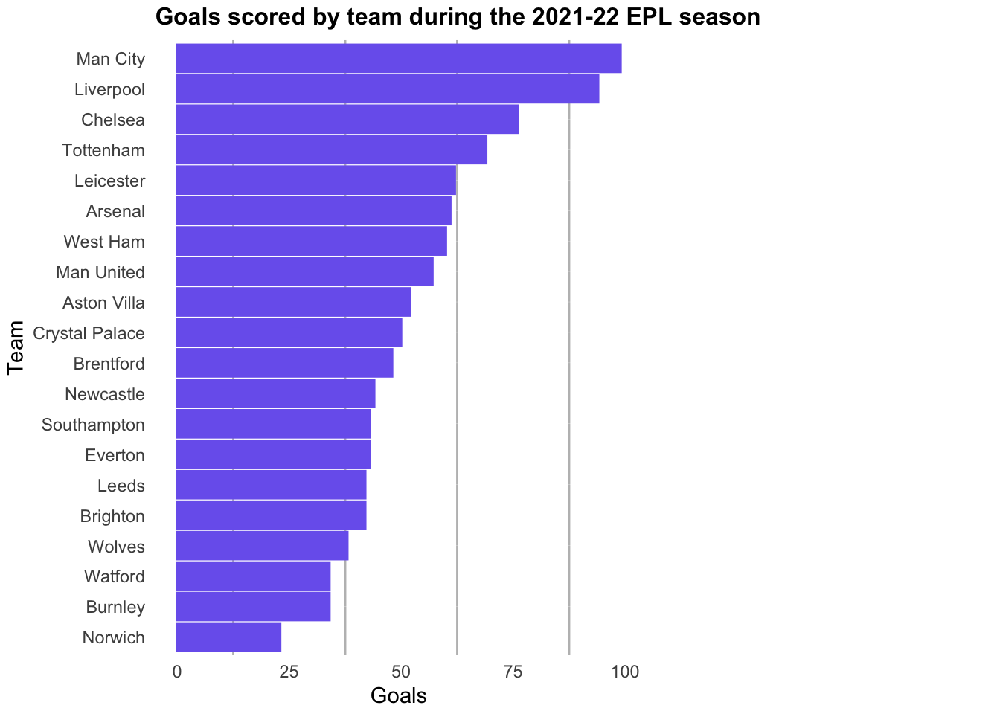

Attaching package: 'scales'
The following object is masked from 'package:purrr':
discard
The following object is masked from 'package:readr':
col_factor
library(dplyr)
First Tidy Tuesday
# Here is the link to the replicated image"https://github.com/rfordatascience/tidytuesday/blob/master/data/2023/2023-04-11/pic2.png"
# Read in with tidytuesdayR package # Install from CRAN via: install.packages("tidytuesdayR")# This loads the readme and all the datasets for the week of interest# Either ISO-8601 date or year/week works!eggdata <- tidytuesdayR::tt_load('2023-04-11')
--- Compiling #TidyTuesday Information for 2023-04-11 ----
--- There are 2 files available ---
--- Starting Download ---
Downloading file 1 of 2: `egg-production.csv`
Downloading file 2 of 2: `cage-free-percentages.csv`
--- Download complete ---
eggdata <- tidytuesdayR::tt_load(2023, week =15)
--- Compiling #TidyTuesday Information for 2023-04-11 ----
--- There are 2 files available ---
--- Starting Download ---
Downloading file 1 of 2: `egg-production.csv`
Downloading file 2 of 2: `cage-free-percentages.csv`
--- Download complete ---
Byyear<-separate(eggdata$`cage-free-percentages`,observed_month, sep ="-", into =c("year", "Month-Day"))
ggplot(data = DATEYMD,aes(YMD, Mean_hens))+geom_line()+scale_y_continuous(breaks=seq(0,30,5), labels =label_number(suffix ="%"))+scale_x_date(breaks="1 year", date_labels ="20%y")+xlab(substitute(paste(bold('Date (year)'))))+ylab(substitute(paste(bold("Percentage of US hens in cage-free housing"))))+labs(caption ="Figure 2 Percentage of hens in cage-free housing from December 2007 to February 2021 [8]. Data are available at https://osf.io/z2gxn/") +theme(plot.caption.position ="bottom right",plot.caption =element_text(hjust =0 ))+geom_point(size=.5)+theme(axis.text.x =element_text(angle =0, vjust =1, hjust=1))+theme_minimal()+theme(panel.grid.major=element_line(colour="black",linewidth = .05),panel.grid.minor=element_line(colour="grey", linewidth =0.5,))+theme(plot.margin =margin(.6,.1,.6,.17, "in"))

Second Tidy Tuesday
# Get the Data# Read in with tidytuesdayR package # Install from CRAN via: install.packages("tidytuesdayR")# This loads the readme and all the datasets for the week of interest# Either ISO-8601 date or year/week works!soccerdata<- tidytuesdayR::tt_load('2023-04-04')
--- Compiling #TidyTuesday Information for 2023-04-04 ----
--- Compiling #TidyTuesday Information for 2023-04-04 ----
--- There is 1 file available ---
--- Starting Download ---
Downloading file 1 of 1: `soccer21-22.csv`
--- Download complete ---
soccer <- soccerdata$soccer# Or read in the data manuallysoccer <- readr::read_csv('https://raw.githubusercontent.com/rfordatascience/tidytuesday/master/data/2023/2023-04-04/soccer21-22.csv')
Rows: 380 Columns: 22
── Column specification ────────────────────────────────────────────────────────
Delimiter: ","
chr (6): Date, HomeTeam, AwayTeam, FTR, HTR, Referee
dbl (16): FTHG, FTAG, HTHG, HTAG, HS, AS, HST, AST, HF, AF, HC, AC, HY, AY, ...
ℹ Use `spec()` to retrieve the full column specification for this data.
ℹ Specify the column types or set `show_col_types = FALSE` to quiet this message.
ggplot(final_soccer_data, aes(reorder(team,goals),goals))+theme_minimal()+geom_col(fill="#7a66ee", colour ="#7a66ee")+xlab("Team")+ylab("Goals")+ggtitle(label ="Goals scored by team during the 2021-22 EPL season")+theme(plot.margin =margin(.05,2.5,.05,.05, "in"))+theme(plot.title =element_text(size =12, face ="bold"))+theme(panel.grid.major=element_line(colour="white",linewidth = .05),panel.grid.minor=element_line(colour="grey", linewidth =0.5,))+coord_flip()

Third Tidy Tuesday
# Get the Data# Read in with tidytuesdayR package # Install from CRAN via: install.packages("tidytuesdayR")# This loads the readme and all the datasets for the week of interest# Either ISO-8601 date or year/week works!artdata <- tidytuesdayR::tt_load('2023-01-17')
--- Compiling #TidyTuesday Information for 2023-01-17 ----
--- There is 1 file available ---
--- Starting Download ---
Downloading file 1 of 1: `artists.csv`
--- Download complete ---
artdata <- tidytuesdayR::tt_load(2023, week =03)
--- Compiling #TidyTuesday Information for 2023-01-17 ----
--- There is 1 file available ---
--- Starting Download ---
Downloading file 1 of 1: `artists.csv`
--- Download complete ---
arthistory <- artdata$arthistory# Or read in the data manuallyartists <- readr::read_csv('https://raw.githubusercontent.com/rfordatascience/tidytuesday/master/data/2023/2023-01-17/artists.csv')
Rows: 3162 Columns: 14
── Column specification ────────────────────────────────────────────────────────
Delimiter: ","
chr (8): artist_name, artist_nationality, artist_nationality_other, artist_g...
dbl (6): edition_number, year, space_ratio_per_page_total, artist_unique_id,...
ℹ Use `spec()` to retrieve the full column specification for this data.
ℹ Specify the column types or set `show_col_types = FALSE` to quiet this message.
years <-data.frame(artists$year)pub_per_year <- years %>%group_by(artists.year) %>%summarize(counts =n())names(pub_per_year)[1] ="year"#pub_per_year[5,]<-(pub_per_year[5,]+pub_per_year[6,])/2 # mean and then remove row 6#pub_per_year[5,]<-(pub_per_year[5,]+pub_per_year[6,])/2pub_per_year2 <-data.frame(pub_per_year[-c(5,6,9,11,12,13,15,17,19),])pub_per_year2[nrow(pub_per_year2)+1,]<-c(1988,109)pub_per_year2[nrow(pub_per_year2)+1,]<-c(2001,170)
ggplot(pub_per_year2, aes(year,counts))+geom_bar(stat="identity",fill="darkgreen",color="darkgreen", width =2.6)+theme_minimal()+theme(panel.grid.major=element_line(colour="black",linewidth = .05),panel.grid.minor=element_line(colour="grey", linewidth =0.5,))+theme(plot.margin =margin(.8,.2,.8,.2, "in"))+ggtitle(label ="Overall Count of Artists in Gardner's Art Through the Ages")+geom_text(aes(label=counts), position=position_dodge(width=0.9), vjust=-.2,size=3)+theme(plot.title =element_text(size =16, face ="bold"))+xlab(substitute(paste(bold('Year of Publication'))))+ylab(substitute(paste(bold("Count"))))+scale_y_continuous(breaks=seq(0,200,50))+scale_x_continuous(breaks=seq(1925,2025,25))